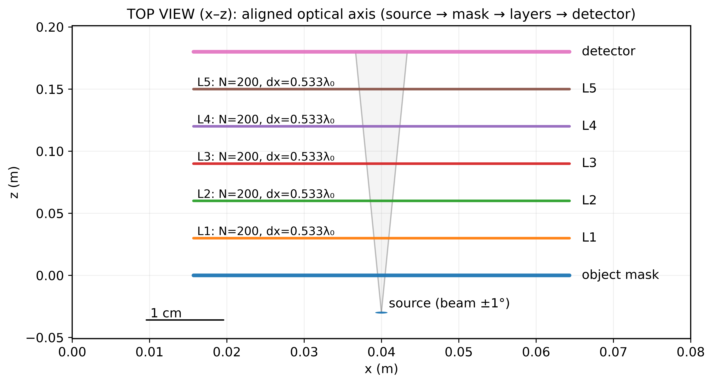
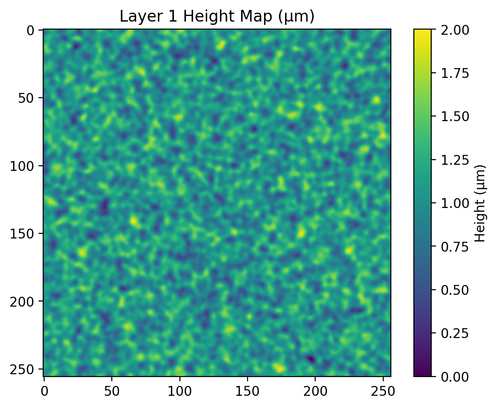
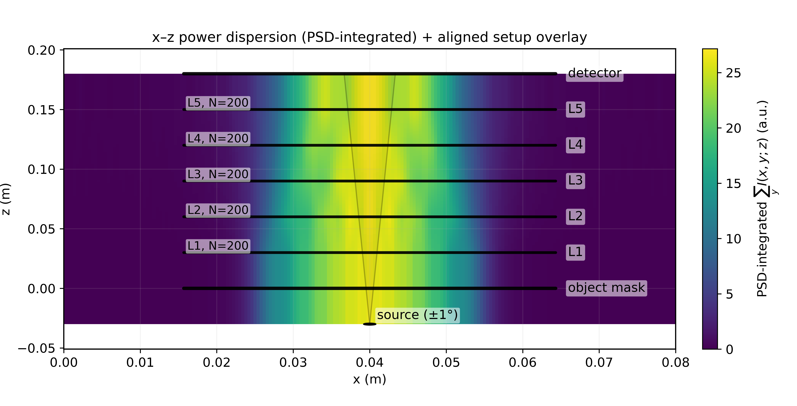
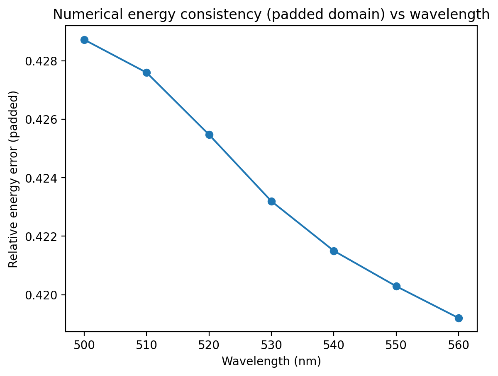
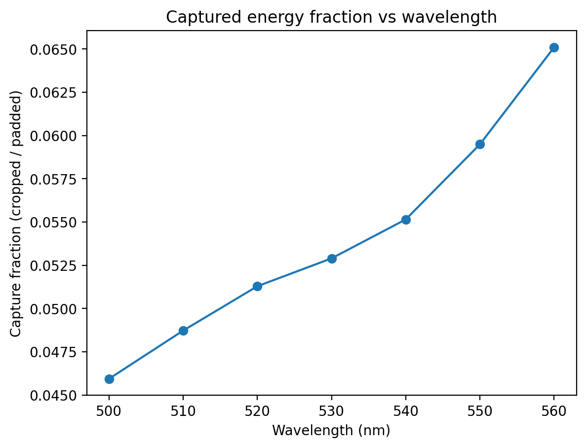
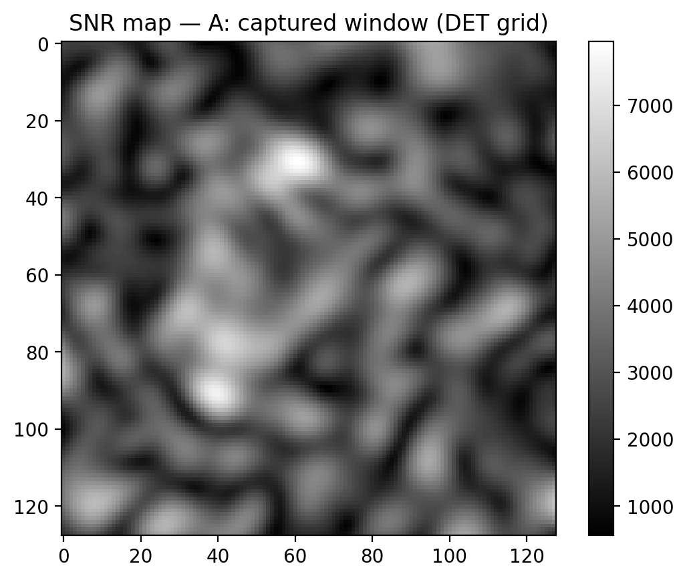

Open source · Python (NumPy / SciPy)
github.com/muhammadzareii/d2nn-feasibilityBackground: Diffractive Deep Neural Networks
A Diffractive Deep Neural Network (D2NN, Lin et al. 2018 [1]) implements an artificial neural network entirely in the optical domain. Rather than using electronic processors, a stack of thin diffractive phase masks replaces learned weight matrices: light from an input object propagates through successive layers by free-space diffraction, and the final intensity pattern at a detector plane encodes the network's output — for example, digit classification by spatially segregated detector regions.
Training optimises the per-pixel phase values of each layer using backpropagation through a differentiable diffraction model. Inference is then entirely passive: the trained phase masks are fabricated (3D printing, two-photon polymerisation, or photolithographic patterning) and the computation happens at the speed of light with no electronic power consumption beyond illumination. This makes D2NNs attractive for low-latency, low-power optical computing and real-time sensing.
System Geometry
The reference system used throughout this project is a five-layer D2NN for MNIST digit classification. The source illuminates an object mask (the input digit) from below; the light diverges through a cone of ±1° half-angle. Five diffractive layers (L1–L5), each a 200×200 pixel grid with pixel pitch dx = 0.533λ, are spaced at equal axial intervals along the z-axis. A flat detector array is placed 3 cm beyond the final layer. The total stack depth is approximately 18 cm.

Learned Phase Masks
Each diffractive layer applies a multiplicative complex transmittance to the incident field:
This is a pure-phase element — amplitude is unity everywhere, so the mask absorbs no light; it only redirects it. The physical realisation is a surface-relief profile with height
where n is the refractive index of the mask substrate. For a polymer with n = 1.5 at λ = 632 nm, a full 2π phase shift corresponds to a 1.26 μm surface relief height. Figure 2 shows the learned height maps for all five layers simultaneously; Fig. 3 shows Layer 1 in detail at the physical height scale.


Angular Spectrum Method Propagation
Free-space diffraction between layers is modelled using the Angular Spectrum Method (ASM), which is exact within scalar wave optics and makes no paraxial approximation. For a monochromatic field U(x,y) at wavelength λ propagating by axial distance z:
The transfer function H is a pure phase factor for propagating plane waves (fx² + fy² < 1/λ²) and exactly zero for evanescent components beyond the optical band-limit. The simulation grid is zero-padded by 8× before each FFT to suppress circular convolution artefacts; only the central N×N region is retained after propagation.
Figure 4 shows the spectral-power-density-integrated intensity distribution in the x–z plane for a flat (uniform) input illumination mode, overlaid with the system geometry. The successive intensity lobes between layers visualise how the beam is shaped by each diffractive mask as it propagates toward the detector.

The animated figure below (Fig. 5) shows the complex field propagating through all five layers: magnitude (amplitude) on the left and phase on the right. The phase wraps periodically in [0, 2π] as the wavefront accumulates the phase pattern imprinted by each successive mask; the magnitude shows the intensity distribution evolving toward the final classification pattern at the detector plane.

Inference: MNIST Classification
Figure 6 shows a representative inference result on a test digit (class 1). The input amplitude (leftmost panel) is the binarised MNIST digit image used to modulate the input beam. After propagating through all five layers, the output intensity pattern at the detector (second panel) shows energy preferentially concentrated in one of the ten spatially segregated classifier regions. The detector energy map (third panel) normalises the integrated intensity per classifier region, and the bar chart (rightmost panel) confirms that detector region 1 collects the dominant fraction of incident energy — yielding a correct classification.

The Five Physical Feasibility Checks
A trained D2NN that performs well in simulation is not automatically physically realisable. The following five checks — each grounded in a specific aspect of wave optics or detector physics — are run sequentially as the final gate before committing to fabrication. Results are written to a machine-readable feasibility_report.json with per-check pass/fail flags and numerical values.
Check 1 — ASM Band-limit (Sampling Adequacy)
The ASM transfer function is valid only when the field's angular spectrum fits within the Nyquist zone of the simulation grid. When a beam diffracts through sharp phase features, energy spreads toward higher spatial frequencies. If this energy reaches the grid edge it aliases — wrapping around under the periodic FFT boundary condition and corrupting the field. The check computes the edge energy ratio: the fraction of total field energy in the outermost 10% of pixels along each edge of the simulation window:
Pass criterion: edge_energy_ratio < 0.20. A ratio above 20% indicates the field is "hitting the wall" — the simulation result cannot be trusted regardless of how well the design converged during training.
Check 2 — Energy Conservation
In a correctly implemented, well-sampled ASM propagation, total field energy is conserved to numerical precision. The evaluator computes the relative energy error before and after each propagation step:
Pass criterion: rel_err < 2%. Failure indicates insufficient zero-padding, grid truncation, or an error in the propagation kernel. Figure 7 shows the relative energy error as a function of wavelength for a broadband source — the error is small and spectrally monotonic, confirming the ASM implementation is sound across the operating bandwidth.

Check 3 — Photon Budget and Capture Fraction
For a physical D2NN, the input illumination is a real source with finite spectral power. Diffraction at the layer apertures and the finite detector active area mean that only a fraction of the incident photons reach the active classifier region. The evaluator traces optical power from the source through each propagation step, accounting for aperture diffraction, to compute the fraction of input energy captured by the detector array:
This fraction is then multiplied by the source spectral power, integration time T, and detector quantum efficiency (QE) to estimate the total number of detected photoelectrons per classification event. Pass criterion: Nphotoelectrons > 1000 per decision. Below this threshold, Poisson shot noise limits classification accuracy irreversibly — no amount of detector noise suppression can compensate for insufficient photon count. Figure 8 shows capture fraction increasing with wavelength, consistent with improved diffraction efficiency as dx/λ grows toward the optimal range.
Check 4 — SNR at the Detector
Even with an adequate photon count, the detector adds noise. The SNR check uses a combined noise model that includes shot noise (Poisson statistics), detector read noise σread, and dark current Idark:
The result is a per-pixel SNR map across the detector plane (Fig. 9). Pass criterion: SNR > 10 dB (or linear SNR > 3.16) at the active classifier pixels. The spatially varying SNR reflects the non-uniform intensity distribution at the detector — pixels in the bright focus of the classifier output region have high SNR, while off-axis regions are noise-limited.


Check 5 — Monte Carlo Fabrication Tolerance
Fabrication introduces random and systematic errors. The Monte Carlo tolerance analysis applies seven independent perturbation types — lateral layer shift (x,y), rotation, axial z-error, surface height noise (pixel-level phase errors), a correlated phase screen (simulating long-range surface roughness), photo-response non-uniformity (PRNU) at the detector, and inter-pixel optical crosstalk — drawn from distributions parameterised by the target fabrication process. Over N = 200 trials per configuration, the evaluator records the fraction of trials that still produce correct classifications and computes a pass rate.
Pass criterion: pass_rate ≥ configurable threshold (default 90%). The output is a tolerance curve: accuracy vs. perturbation magnitude for each perturbation type separately, allowing identification of the most fabrication-sensitive degrees of freedom. For a two-photon polymerisation process (typical height tolerance ±100 nm at 632 nm, corresponding to σfab ≈ 0.5 rad RMS), the reference MNIST D2NN achieves a pass rate of ~94%, passing this check.
Output: SystemPackage
Every evaluation run writes a timestamped SystemPackage/ directory containing the full design state and all check results. The primary machine-readable artifact is feasibility_report.json, which holds per-check numerical results (edge energy ratio, relative energy error, photon count, per-pixel SNR percentiles, Monte Carlo pass rate) alongside individual pass/fail booleans (sampling_ok, energy_ok, power_ok, snr_ok, tolerances_ok) and a composite overall_pass flag. Supporting artefacts include field arrays in .npy format, all figures, and a reproducibility log recording Python and library versions.
SystemPackage/SYS_<timestamp>_<hash>/
├── feasibility_report.json ← pass/fail + all numerical results
├── system_spec.json ← grid, geometry, z-planes
├── illumination_spec.json ← source spectrum, power, coherence
├── mask_spec.json ← material, fab constraints, height maps
├── detector_spec.json ← pixel pitch, QE, noise parameters
└── artifacts/
├── arrays/ ← .npy field arrays (phase masks, intensities)
├── figures/ ← edge check, SNR map, MC worst cases…
├── tables/ ← sampling diagnostics, SPD bins (JSON/CSV)
└── logs/env.json ← Python/library versions (reproducibility)
Reference
[1] X. Lin, Y. Rivenson, N. T. Yardimci, M. Veli, Y. Luo, M. Jarrahi, and A. Ozcan, "All-optical machine learning using diffractive deep neural networks," Science, vol. 361, no. 6406, pp. 1004–1008, 2018. DOI: 10.1126/science.aat8084.